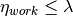

income module¶
This is module contains code for governing the need to work/ be schooled.
This module contains the class income.Income.
Module author: Dr. Namdi Brandon
-
class
income.Income(clock, num_sample_points)[source]¶ Bases:
need.NeedThis class governs the need association dealing with work / school. Recall that income mathematically resembles a step function.
Parameters: - clock (temporal.Temporal) – the time
- num_sample_points (int) – the number of temporal node points in the simulation
-
decay(p)[source]¶ This function decays the magnitude of the need. Income only decays after the job start time.
- Find out if it is time to work
- If it’s time to work, set the satiation

Parameters: p (person.Person) – the person of interest Returns: None
-
initialize(p)[source]¶ This function is used to initialize the agent’s income need at the beginning of the simulation. This function initializes the Person to be at the workplace (
location.OFF_SITE) if it is work time. This function does the following:- decay the income satiation
- if the person is supposed to be at work
- set the person to the workplace location
- else, set the amount of time until the next work event
- update the scheduler for the income need
Parameters: p (person.Person) – the person of interest Returns: None
-
perceive(clock, job)[source]¶ This gives the satiation of income if the income need is addressed now.
- find out if the time associated with clock implies a work time for the person
- If it should be work time
- the perceived satiation is 
- else, the perceived satiation is

Parameters: - clock (temporal.Temporal) – the future time the activity the should be perceived to be done
- job (occupation.Occupation) – the job
Returns: the satiation at the perceived time
Return type: float